Welcome and Introduction
ASSE Reloaded
Simon Mayer, Alessandro Giugno, Luka Bekavac
University of St.Gallen
Master in Computer Science
Advanced Software and Systems Engineering (7,856)
From insight to impact.
Interactions: Our Team
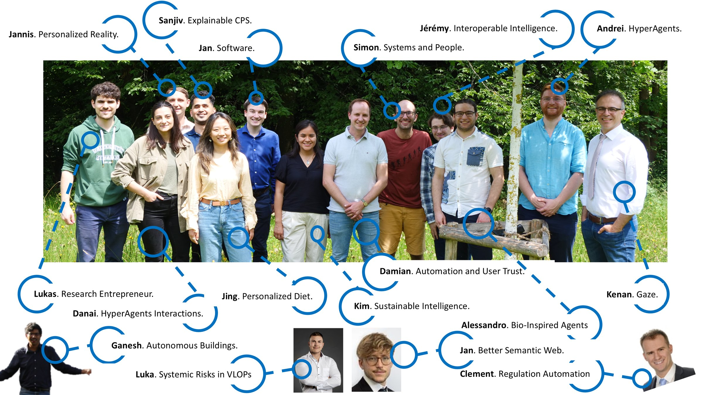
Advanced Software and Systems Engineering | Institute of Computer Science | University of St.Gallen
2Interactions: Our Research
Systems and People in Ubiquitous Computing Environments
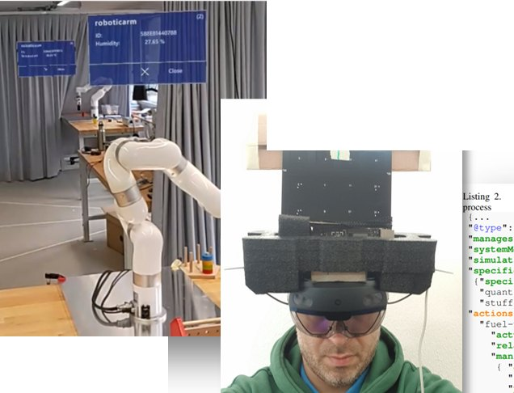
Advanced Software and Systems Engineering | Institute of Computer Science | University of St.Gallen
3Interactions: Our Research
World-Wide Autonomous Systems
- A Decade in Hindsight: The Missing Bridge Between Multi-Agent Systems and the World Wide Web. AAMAS 2019
- Increasing the Intelligence of Low-Power Sensors with Autonomous Agents. SenSys 2022
- Signifiers as a First-class Abstraction in Hypermedia Multi-Agent Systems. AAMAS 2023
- Enabling BDI Agents to Reason on a Dynamic Action Repertoire in Hypermedia Environments. AAMAS 2024
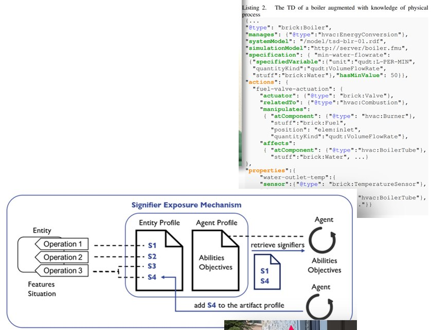
Advanced Software and Systems Engineering | Institute of Computer Science | University of St.Gallen
4Interactions: Our Research
Legal Context of Ubiquitous Computing
- Machine Capacity of Judgment. Technology in Society 2022
- Responsible Automatically Processable Regulation. AI & Society 2024
- Regulating for Trust: Can Law establish Trust in Artificial Intelligence? Regulation & Governance 2024
- From Walls to Windows: Creating Transparency to Understand Filter Bubbles in Social Media. NORMADIC 2024
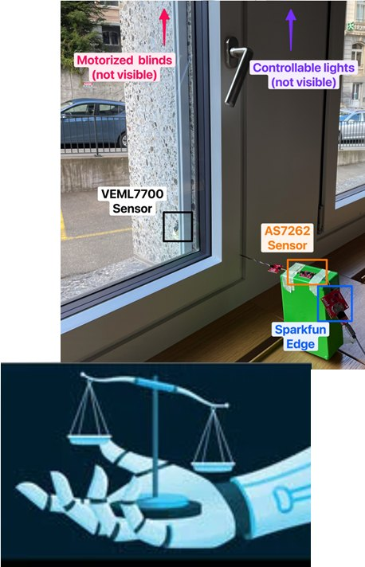
Advanced Software and Systems Engineering | Institute of Computer Science | University of St.Gallen
5Excerpts from our Research
Reactive Executable Markers (REMs) expose code that changes based on the current ambient temperature.
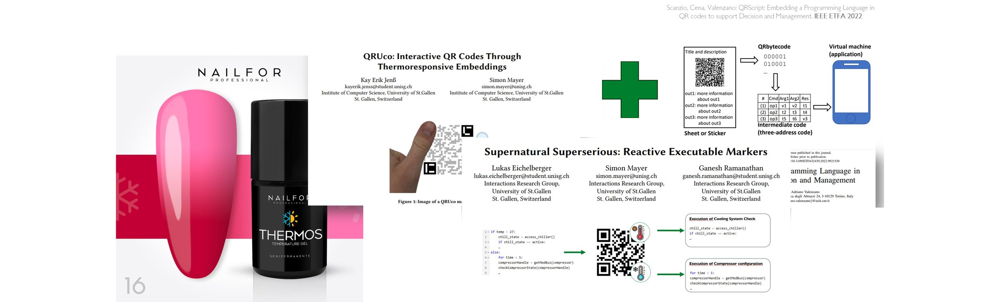
Jenss, Mayer. QRUco: Interactive QR Codes Through Thermoresponsive Embeddings. CHI 2023. Paper & Video. Eichelberger, Mayer, Ramanathan. Supernatural Superserious: Reactive Executable Markers. UbiComp 2025
Advanced Software and Systems Engineering | Institute of Computer Science | University of St.Gallen
6Excerpts from our Research
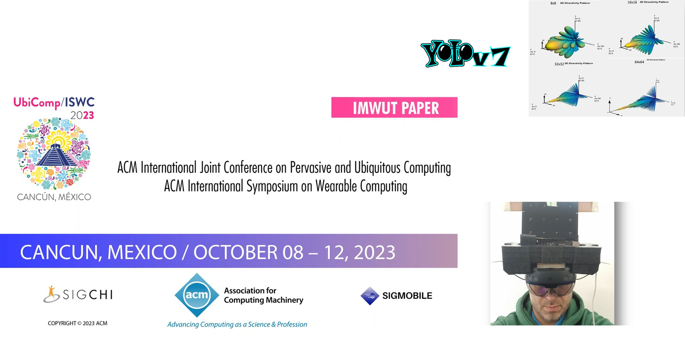
Strecker, Akhunov, Carbone, Garcia, Bektas, Gomez, Mayer, Yildirim. MR Object Identification and Interaction: Fusing Object Situation Information from Heterogeneous Sources. IMWUT 2024
Advanced Software and Systems Engineering | Institute of Computer Science | University of St.Gallen
7In the PowerPoint version, this slide plays the video "MR Object Identification and Interaction"; the picture is its title card.Excerpts from our Research
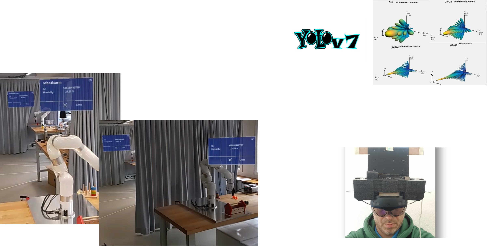
Strecker, Akhunov, Carbone, Garcia, Bektas, Gomez, Mayer, Yildirim. MR Object Identification and Interaction: Fusing Object Situation Information from Heterogeneous Sources. IMWUT 2024
Advanced Software and Systems Engineering | Institute of Computer Science | University of St.Gallen
8Simon: Systems and People
- PhD in Computer Science, ETH Zurich (2010-2014)
- Senior Key Expert for Smart and Interoperable Systems, Siemens Corporate Technology, Berkeley (2014-2017)
- Research Group Leader “Cognitive Products”, Pro²Future, and Postdoctoral Researcher, TU Graz (2017-2018)
- Senior Researcher, ETH Zurich (2018-2020)
- University of St.Gallen
- Professor for Interaction- and Communication-based Systems (2018 →)
- Director, Institute of Computer Science (2019 →)
- Dean, School of Computer Science (2024 →)
- Lecturer, ETH Zurich (2015-2020), MIT (2015), UC Berkeley (2015-2017), TU Graz (2017-2019), University of Zurich (2020-2022), University of Bologna (2023)
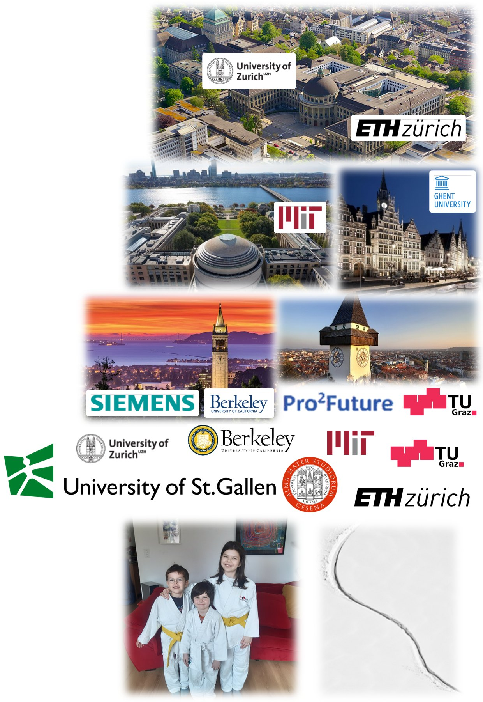
Advanced Software and Systems Engineering | Institute of Computer Science | University of St.Gallen
9From Software to Systems
After the focus on individual components in the first half of the semester, we now concentrate on interactions between components. Specifically, we will discuss the trade-offs that are involved in designing these interfaces and interactions.
Many of the concepts that you saw in the course up to now apply again!
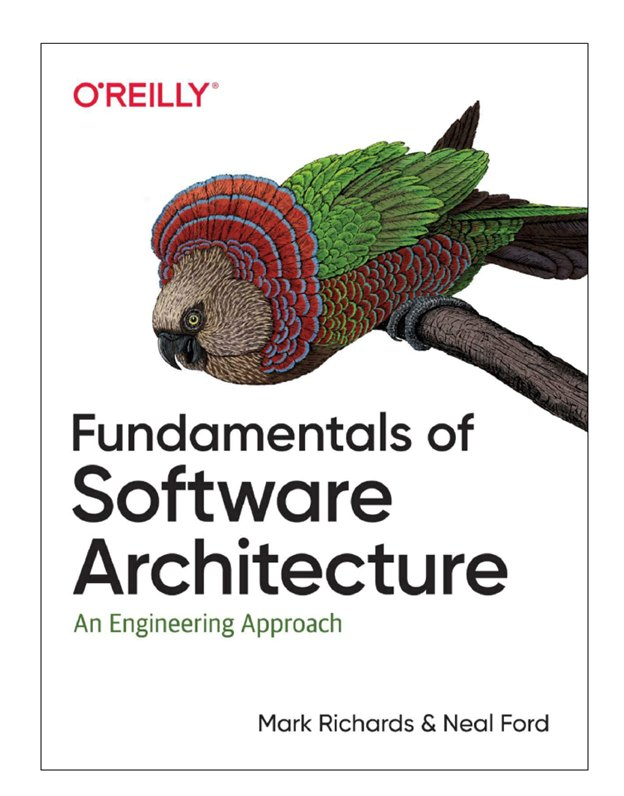
Advanced Software and Systems Engineering | Institute of Computer Science | University of St.Gallen
10“Everything in software architecture is a trade-off.” … and systems!
Mark Richards and Neal Ford, Fundamentals of Software Architecture
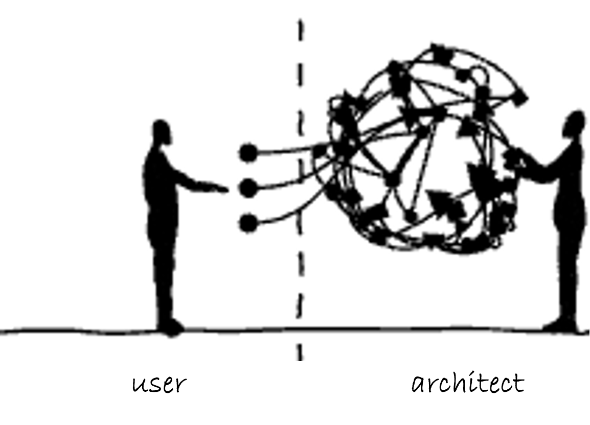
- “WHY is more important than HOW.”
- Software architecture consists of the structure of the system, combined with architecture characteristics (“-ilities”) the system must support, architecture decisions, and finally design principles.
Advanced Software and Systems Engineering | Institute of Computer Science | University of St.Gallen
11(Selected) Architecture Characteristics
| Architecture characteristic | Definition |
|---|---|
| Reliability | Refers to the probability of a failure-free operation of the system for a specific period |
| Responsiveness | The ability of a system to complete assigned tasks within a certain time |
| Availability | Refers to the percentage of time a system is available for its user in a given period |
| Fault tolerance | The ability of a system to continue operating in the event of a failure within some of its components |
| Scalability | The ability to handle large numbers of concurrent users without serious performance degradation |
| Elasticity | The ability to handle bursts of requests |
Advanced Software and Systems Engineering | Institute of Computer Science | University of St.Gallen
12(Selected) Architecture Characteristics
| Architecture characteristic | Definition |
|---|---|
| Data integrity | Refers to the accuracy and consistency (validity) of data over its lifecycle |
| Data consistency | Refers to whether the same data kept at different places do or do not match |
| Adaptability | Refers to the ability to easily change the system according to the requirements |
| Extensibility | Refers to the ability to extend a system and the effort needed to implement the extensions |
| Testability | The degree to which a software artifact supports testing in a given test context |
| Deployability | The extent to which something is deployable |
Advanced Software and Systems Engineering | Institute of Computer Science | University of St.Gallen
13Overall Goal: Conscious Handling of Architectural Trade-Offs
As the architect of a (distributed) (information) system, you should be aware of the design trade-offs that are induced by specific choices in order to construct a system with your desired non-functional properties.
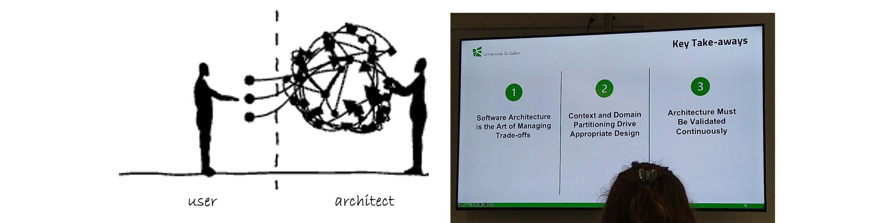
Advanced Software and Systems Engineering | Institute of Computer Science | University of St.Gallen
14Overall Goal: Multi-Level View on Interoperability
As the architect of a (distributed) (information) system, you should be aware of different ways of how to consciously manage the interoperability of system components.
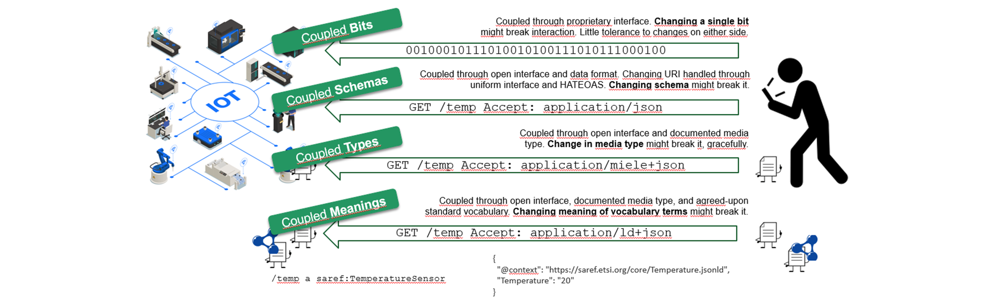
Advanced Software and Systems Engineering | Institute of Computer Science | University of St.Gallen
15Overall Goal: Precision
As the architect of a (distributed) (information) system, you should use terminology in a clear and well-founded way. Your definitions should be based on accepted expert sources.
This is relevant as our (technology) world needs to be based on clearly-communicated facts, not on obfuscated beliefs.
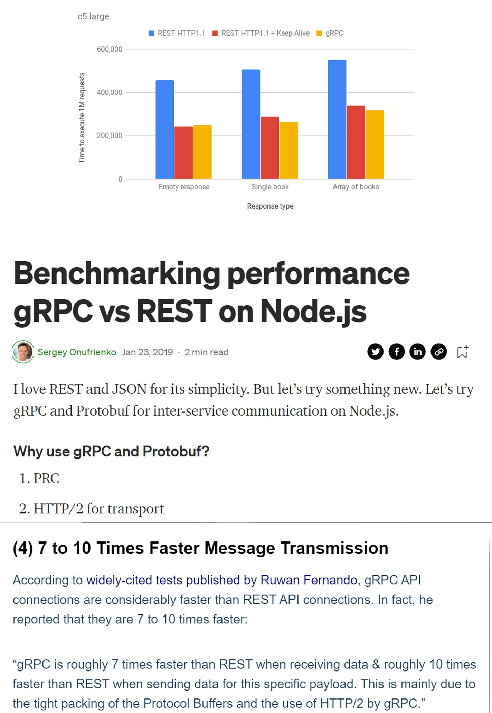
Advanced Software and Systems Engineering | Institute of Computer Science | University of St.Gallen
16Overall Goal: Precision
Terms that come up: “client-server”, “blocking”, “request-response”
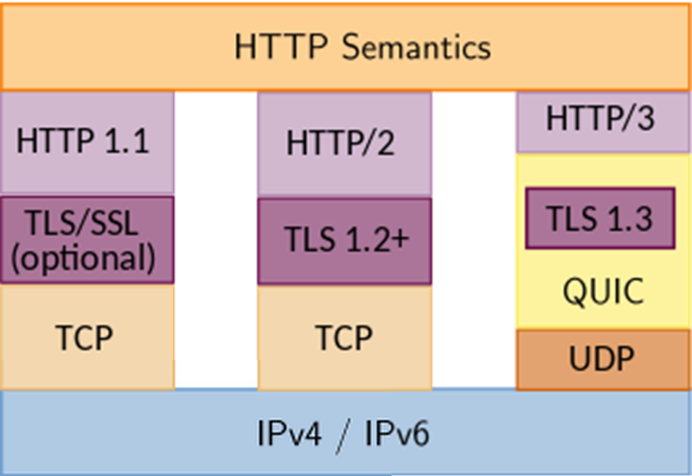
Advanced Software and Systems Engineering | Institute of Computer Science | University of St.Gallen
17Overall Goal: Precision
- AJAX and the JS Fetch API
- HTTP/2 multiplexing
- WebSockets
- WebHooks
fetch(file) .then(x => x.text()) .then(y => myDisplay(y));
Can the system not decide at run time whether it should communicate in a blocking or non-blocking way? ;-)
Advanced Software and Systems Engineering | Institute of Computer Science | University of St.Gallen
18Lecture Learning Goals
| Lecture | Understand… | Assignment |
|---|---|---|
| 1 | how you may select fitting architectural constraints to achieve a desired non-functional profile | Uniform Interaction? Exploring the REST Architectural Style |
| 2 | how you may select fitting interaction styles to achieve a desired non-functional profile | What Interaction Style? Event-based Interaction using MQTT and W3C WebSub |
| 3 | ecological interaction between hosts beyond individual requests | Where to Couple? Decentralization and Informed Discovery |
| 4 | that decoupling may happen on many levels beyond the immediate API | Multi-level Decoupling? Decoupling through Semantic Hypermedia |
| 5 | what changes when higher autonomy potential and constrained devices enter the game | Autonomy and Interactions with Constrained Devices |
Advanced Software and Systems Engineering | Institute of Computer Science | University of St.Gallen
19What's with that PlugFest?
- Gloriously integrate all groups' implementations
- Experience how interoperability testing is done in practice with your results from Assignment 7 and Assignment 8
- Socialize and have Pizza (sponsored by Siemens, thank you!)
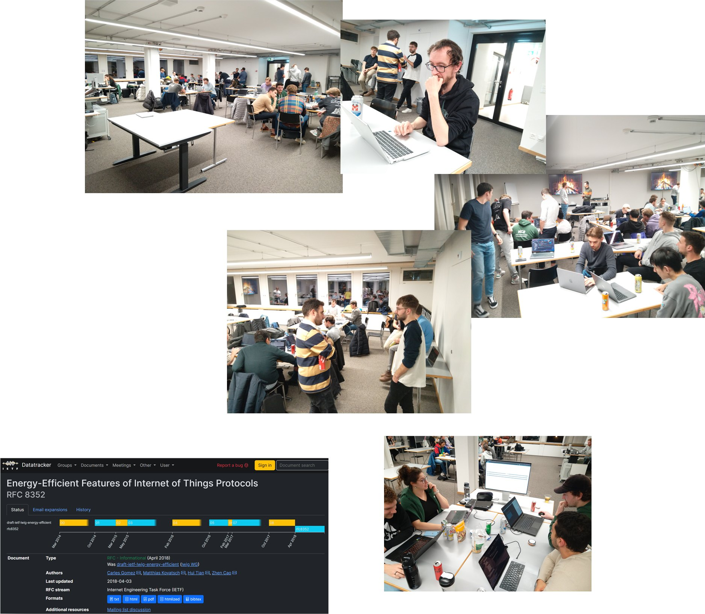
Advanced Software and Systems Engineering | Institute of Computer Science | University of St.Gallen
20Syllabus
Advanced Software and Systems Engineering | Institute of Computer Science | University of St.Gallen
21Assignments per session in the original plan: 14.09 Event Storming & Architecture Characteristics; 21.09 ADRs, Service Granularity, Spring 101; 28.09 Hexagonal Architecture, Domain Entity Testing; 05.10 Persistence, Integration Testing; 12.10 Interactions, Communication, System Testing; 19.10 Cleanup and Group Split; 09.11 Uniform Interaction; 16.11 Event-Driven Interaction; 23.11 Hypermedia Ecosystems; 30.11 Decoupling through Semantic Hypermedia; 07.12 Agents and the Web of Things. PITAS PlugFest: 24.11, 5 to 8pm.Style
In the lectures
- I'll be interactive and illustrative and try to avoid “slide shows”
- I'm illustrating and highlighting concepts that I find particularly interesting/relevant, not “reading”
- You'll need to make sure that you have read the literature we point you at
- You'll need to make sure that you ask us if something isn't clear
Grading Reminder
- Written Exam, Individual Grades (50%)
- Group Project, Individual Grades (50%)
- Grades given end of semester; improve your projects until final submission
- Typically the same grade; different grades if relevant divergences
Advanced Software and Systems Engineering | Institute of Computer Science | University of St.Gallen
22Exam Style
Advanced Software and Systems Engineering | Institute of Computer Science | University of St.Gallen
23Any Questions / Comments / Doubts / Concerns?

Advanced Software and Systems Engineering | Institute of Computer Science | University of St.Gallen
24